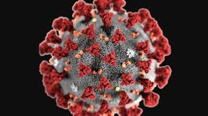

Coronaviruses are a group of related viruses that cause diseases in mammals and birds. In humans, coronaviruses cause respiratory tract infections that can range from mild to lethal. Mild illnesses include some cases of the common cold (which is caused also by certain other viruses, predominantly rhinoviruses), while more lethal varieties can cause SARS, MERS, and COVID-19. Symptoms in other species vary: in chickens, they cause an upper respiratory tract disease, while in cows and pigs they cause diarrhea. There are as yet no vaccines or antiviral drugs to prevent or treat human coronavirus infections.
Coronaviruses constitute the subfamily Orthocoronavirinae, in the family Coronaviridae, order Nidovirales, and realm Riboviria. They are enveloped viruses with a positive-sense single-stranded RNA genome and a nucleocapsid of helical symmetry. The genome size of coronaviruses ranges from approximately 26 to 32 kilobases, one of the largest among RNA viruses. They have characteristic club-shaped spikes that project from their surface, which in electron micrographs create an image reminiscent of the solar corona, from which their name derives.
The name "coronavirus" is derived from Latin corona, meaning "crown" or "wreath", itself a borrowing from Greek κορώνη korṓnē, "garland, wreath". The name was coined by June Almeida and David Tyrrell who first observed and studied human coronaviruses. The word was first used in print in 1968 by an informal group of virologists in the journal Nature to designate the new family of viruses. The name refers to the characteristic appearance of virions (the infective form of the virus) by electron microscopy, which have a fringe of large, bulbous surface projections creating an image reminiscent of the solar corona or halo. This morphology is created by the viral spike peplomers, which are proteins on the surface of the virus.
Coronaviruses were first discovered in the 1930s when an acute respiratory infection of domesticated chickens was shown to be caused by infectious bronchitis virus (IBV). Arthur Schalk and M.C. Hawn described in 1931 a new respiratory infection of chickens in North Dakota. The infection of new-born chicks was characterized by gasping and listlessness. The mortality rate of the chicks was 40–90%. Fred Beaudette and Charles Hudson six years later successfully isolated and cultivated the infectious bronchitis virus which caused the disease. In the 1940s, two more animal coronaviruses, mouse hepatitis virus (MHV) and transmissible gastroenteritis virus (TGEV), were isolated. It was not realized at the time that these three different viruses were related.
Human coronaviruses were discovered in the 1960s. They were isolated using two different methods in the United Kingdom and the United States. E.C. Kendall, Malcom Byone, and David Tyrrell working at the Common Cold Unit of the British Medical Research Council in 1960 isolated from a boy a novel common cold virus B814. The virus was not able to be cultivated using standard techniques which had successfully cultivated rhinoviruses, adenoviruses and other known common cold viruses. In 1965, Tyrrell and Byone successfully cultivated the novel virus by serially passing it through organ culture of human embryonic trachea. The new cultivating method was introduced to the lab by Bertil Hoorn. The isolated virus when intranasally inoculated into volunteers caused a cold and was inactivated by ether which indicated it had a lipid envelope. Around the same time, Dorothy Hamre and John Procknow at the University of Chicago isolated a novel cold virus 229E from medical students, which they grew in kidney tissue culture. The novel virus 229E, like the virus strain B814, when inoculated into volunteers caused a cold and was inactivated by ether.
The two novel strains B814 and 229E were subsequently imaged by electron microscopy in 1967 by Scottish virologist June Almeida at St. Thomas Hospital in London. Almeida through electron microscopy was able to show that B814 and 229E were morphologically related by their distinctive club-like spikes. Not only were they related with each other, but they were morphologically related to infectious bronchitis virus (IBV). A research group at the National Institute of Health the same year was able to isolate another member of this new group of viruses using organ culture and named the virus strain OC43 (OC for organ culture). Like B814, 229E, and IBV, the novel cold virus OC43 had distinctive club-like spikes when observed with the electron microscope.
The IBV-like novel cold viruses were soon shown to be also morphologically related to the mouse hepatitis virus. This new group of IBV-like viruses came to be known as coronaviruses after their distinctive morphological appearance. Human coronavirus 229E and human coronavirus OC43 continued to be studied in subsequent decades. The coronavirus strain B814 was lost. It is not known which present human coronavirus it was. Other human coronaviruses have since been identified, including SARS-CoV in 2003, HCoV NL63 in 2004, HCoV HKU1 in 2005, MERS-CoV in 2012, and SARS-CoV-2 in 2019. There have also been a large number of animal coronaviruses identified since the 1960s.
Structure
Coronaviruses are large pleomorphic spherical particles with bulbous surface projections. The average diameter of the virus particles is around 120 nm (.12 μm). The diameter of the envelope is ~80 nm (.08 μm) and the spikes are ~20 nm (.02 μm) long. The envelope of the virus in electron micrographs appears as a distinct pair of electron dense shells.
The viral envelope consists of a lipid bilayer where the membrane (M), envelope (E) and spike (S) structural proteins are anchored. A subset of coronaviruses (specifically the members of betacoronavirus subgroup A) also have a shorter spike-like surface protein called hemagglutinin esterase (HE).
Inside the envelope, there is the nucleocapsid, which is formed from multiple copies of the nucleocapsid (N) protein, which are bound to the positive-sense single-stranded RNA genome in a continuous beads-on-a-string type conformation. The lipid bilayer envelope, membrane proteins, and nucleocapsid protect the virus when it is outside the host cell.
Genome
Coronaviruses contain a positive-sense, single-stranded RNA genome. The genome size for coronaviruses ranges from 26.4 to 31.7 kilobases. The genome size is one of the largest among RNA viruses. The genome has a 5′ methylated cap and a 3′ polyadenylated tail.
The genome organization for a coronavirus is 5′-leader-UTR-replicase/transcriptase-spike (S)-envelope (E)-membrane (M)-nucleocapsid (N)-3′UTR-poly (A) tail. The open reading frames 1a and 1b, which occupy the first two-thirds of the genome, encode the replicase/transcriptase polyprotein. The replicase/transcriptase polyprotein self cleaves to form nonstructural proteins.
The later reading frames encode the four major structural proteins: spike, envelope, membrane, and nucleocapsid. Interspersed between these reading frames are the reading frames for the accessory proteins. The number of accessory proteins and their function is unique depending on the specific coronavirus.
Replication Cycle
Entry
Infection begins when the viral spike (S) glycoprotein attaches to its complementary host cell receptor. After attachment, a protease of the host cell cleaves and activates the receptor-attached spike protein. Depending on the host cell protease available, cleavage and activation allows the virus to enter the host cell by endocytosis or direct fusion of the viral envelop with the host membrane.
On entry into the host cell, the virus particle is uncoated, and its genome enters the cell cytoplasm. The coronavirus RNA genome has a 5′ methylated cap and a 3′ polyadenylated tail, which allows the RNA to attach to the host cell's ribosome for translation. The host ribosome translates the initial overlapping open reading frame of the virus genome and forms a long polyprotein. The polyprotein has its own proteases which cleave the polyprotein into multiple nonstructural proteins.
Replication
A number of the nonstructural proteins coalesce to form a multi-protein replicase-transcriptase complex (RTC). The main replicase-transcriptase protein is the RNA-dependent RNA polymerase (RdRp). It is directly involved in the replication and transcription of RNA from an RNA strand. The other nonstructural proteins in the complex assist in the replication and transcription process. The exoribonuclease nonstructural protein, for instance, provides extra fidelity to replication by providing a proofreading function which the RNA-dependent RNA polymerase lacks.
One of the main functions of the complex is to replicate the viral genome. RdRp directly mediates the synthesis of negative-sense genomic RNA from the positive-sense genomic RNA. This is followed by the replication of positive-sense genomic RNA from the negative-sense genomic RNA. The other important function of the complex is to transcribe the viral genome. RdRp directly mediates the synthesis of negative-sense subgenomic RNA molecules from the positive-sense genomic RNA. This is followed by the transcription of these negative-sense subgenomic RNA molecules to their corresponding positive-sense mRNAs.
Release
The replicated positive-sense genomic RNA becomes the genome of the progeny viruses. The mRNAs are gene transcripts of the last third of the virus genome after the initial overlapping reading frame. These mRNAs are translated by the host's ribosomes into the structural proteins and a number of accessory proteins. RNA translation occurs inside the endoplasmic reticulum. The viral structural proteins S, E, and M move along the secretory pathway into the Golgi intermediate compartment. There, the M proteins direct most protein-protein interactions required for assembly of viruses following its binding to the nucleocapsid. Progeny viruses are then released from the host cell by exocytosis through secretory vesicles.
Transmission
The interaction of the coronavirus spike protein with its complement host cell receptor is central in determining the tissue tropism, infectivity, and species range of the virus. The SARS coronavirus, for example, infects human cells by attaching to the angiotensin-converting enzyme 2 (ACE2) receptor.
The most recent common ancestor (MRCA) of all coronaviruses is estimated to have existed as recently as 8000 BCE, although some models place the common ancestor as far back as 55 million years or more, implying long term coevolution with bat and avian species. The most recent common ancestor of the alphacoronavirus line has been placed at about 2400 BCE, the betacoronavirus line at 3300 BCE, the gammacoronavirus line at 2800 BCE, and the deltacoronavirus line at about 3000 BCE. Bats and birds, as warm-blooded flying vertebrates, are an ideal natural reservoir for the coronavirus gene pool (bats the reservoir for alphacoronavirus and betacoronavirus – and birds the reservoir for gammacoronavirus and deltacoronavirus). The large number of host bat and avian species, and their global range, has enabled extensive evolution and dissemination of coronaviruses.
Many human coronavirus have their origin in bats. The human coronavirus NL63 shared a common ancestor with a bat coronavirus (ARCoV.2) between 1190–1449 CE. The human coronavirus 229E shared a common ancestor with bat coronavirus (GhanaGrp1 Bt CoV) between 1686–1800 CE. More recently, alpaca coronavirus and human coronavirus 229E diverged sometime before 1960. MERS-CoV emerged in humans from bats through the intermediate host of camels. MERS-CoV, although related to several bat coronavirus species, appears to have diverged from these several centuries ago. The most closely related bat coronavirus and SARS-CoV diverged in 1986. A possible path of evolution, of SARS coronavirus and keen bat coronaviruses, suggests that SARS related coronaviruses coevolved in bats for a long time. The ancestors of SARS-CoV first infected leaf-nose bats of the genus Hipposideridae; subsequently, they spread to horseshoe bats in the species Rhinolophidae, and then to civets, and finally to humans.
Unlike other betacoronaviruses, bovine coronavirus of the species Betacoronavirus 1 and subgenus Embecovirus is thought to have originated in rodents and not in bats. In the 1790s, equine coronavirus diverged from the bovine coronavirus after a cross-species jump. Later in the 1890s, human coronavirus OC43 diverged from bovine coronavirus after another cross-species spillover event. It is speculated that the flu pandemic of 1890 may have been caused by this spillover event, and not by the influenza virus, because of the related timing, neurological symptoms, and unknown causative agent of the pandemic. Human coronavirus OC43 besides causing respiratory infections is also suspected of playing a role in neurological diseases. In the 1950s, the human coronavirus OC43 began to diverge into its present genotypes. Phylogentically, mouse hepatitis virus (Murine coronavirus), which infects the mouse's liver and the central nervous system, is related to human coronavirus OC43 and bovine coronavirus. Human coronavirus HKU1, like the aforementioned viruses, also has its origins in rodents.
|
Orthocoronavirinae
|
|
|

Illustration of the morphology of coronaviruses; the club-shaped viral spike peplomers, colored red, create the look of a corona surrounding the virion when observed with an electron microscope. |
|
|
Virus Classification
|
|
| Realm | Riboviria |
| Phylum | incertae sedis |
| Order | Nidovirales |
| Family | Coronaviridae |
| Subfamily | Orthocoronavirinae |